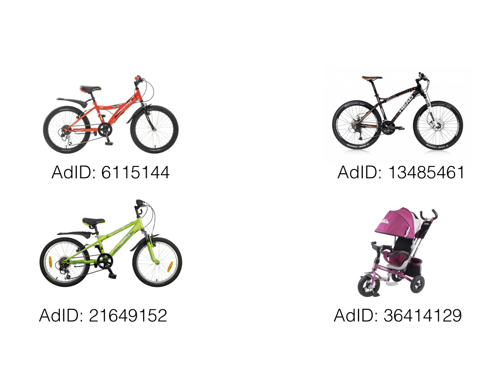

Understanding User Behavior to Optimize Ad CTR
Introduction
Digital Advertising is a multi-billionaire industry that is forecasted to grow globally from $135 billion in 2014 to $240 billion in 2019. As businesses such as e-commerce websites, ad display networks as well as big names such as Google and Facebook rely heavily on ads as a source of income, the ability to predict which ad a user will click is pivotal in ensuring advertising success and highest return on investment. By understanding patterns in user behavior, advertisers can provide more relevant content to maximize ad CTR and improve the user experience. In this project, I explore factors that contribute to a user’s likelihood of clicking on an ad and build a supervised learning algorithm designed to predict the probability a user will click a given ad.
Data Description
Avito, Russia’s largest general classified website allows sellers to place ads on their site for a wide variety of items from electrionics to cars to dogs and cats. Avito had over 31 million active listings in 2015. Although Avito provides a great wealth of goods and services for it's 70 million unique monthly visitors, the task of deciding which ads to show for each individual users is difficult. At the time, Avito used only general statistics on ad performance, not taking into account user behavior, making it difficult to provide relevant ads to its users. To mitigate this, Avito has provided a dataset that contains 300 million randomly sampled users searches from two months. Each row represents an ad that is shown to the user based on a search. The ads listed on Avito’s website consists of three types: regular free ads posted from users, paid ads which are highlighted and placed at the top of the page for a certain time and contextual ads in which the owner pays per visitor click. The goal is to discover insights in user behavior related to ad clicks as well as build a learning algorthm that will predict whether a user will click on a given ad. For each record the following characteristics are available:
Data Prep
The dataset only contains click labels for contextual ads. Since I am interested in factors that drive ad clicks I drop all rows containing non contextual ads. Additionally, the data is about 11gb in size so a smaller subset of the first 500,000 records is used for the initial analysis due to memory constraints as well as computation time.
Overall Website Activity
To begin, let's get an overall picture of how click activity looks during the week. It may reveal weird errors in the data and it'll give us a better understanding of when the site receives the most traffic.
We can see the lowest number of clicks occur from 1AM to 8AM which makes sense since most people are asleep at this time. Click activity starts to pick up from 8AM to 9AM which is when most people wake up. From 10AM to 10PM is when click traffic is most dense and it seems to stays steady during this window. After 10PM, when most people are sleeping, click activity starts to slow down. So it seems nothing too weird is happening, the data makes sense and now we know the optimal times to serve ads to users.
Search Users vs. Filter Users vs. No Filter & No Search
Now that we have a general idea about when clicks are occuring we can go another layer deeper to find out what factors are driving these clicks. I was particularly interested in the question: how does ad click performance differ from users who enter a search query versus users who just click the filter by category option?
Wow, only 18% of users enter a search query. What's really suprising is that search users are more than two times more likely to click on an ad compared to users who only click on the filter option or those who don't search or filter at all! A reason for this difference may be because users who enter a search query have a specific item in mind and know what they want before coming onto the site in which the user may already be in "buying mode". Whereas users who only click on the filter option don’t have a specific item in mind and are still in "exploring mode". The barchart above shows that as users are less specific, the lower the likeihood of clicking on an ad. So we need to find a way to provide relevant ads that are specific to each individual user to aid them during the "exploring phase". I'll address this later when I build a learning algorithm to help solve this issue but for now lets dive a little deeper into what drives search users to click on ads.
Search User Behavior
What are the top items users are querying for?
Looks like the top item users are searching for is a bike. It has over 2x more searches than any other of the top searches which is kind of odd. Why are so many users searching for a bike?
Remember that this dataset is a random sample of user searches from two months? Well it turns out that the two months are April and May. These are the summer months in Russia and in St. Petersburg, May is when the White Nights occur. This is the time when locals revel in the heat and night becomes nearly indistinguishable from day with festivals and partying occurring all night. This could be a reason why a bike is at the top of everyone's wishlist, so they could enjoy the outdoors during the summer weather.
Taking another look at user's top searches, it seems like there's some commonality between the items. Bikes, strollers, shoes, sofas and fridges all seem like items couples who are just starting a family wth a new child, maybe moving into a new home would buy. So I decided to take a look at Russia's birth rates to see if there's anything interesting going on there.
From the map, Russia's 2014 Total Fertility Rate, which measures the expected number of children a women will bear in her lifetime is relatively high compared to the rest of Europe. This means that Russia's demographic consists of a high number of women in their child bearing years. This is really interesting and gives us insight on the type of demographic the ads are attracting as well as how they can be tailored.
Click Behavior
Now that we have a good understanding of what user's are searching for and why let's see which ads are actually being clicked and find out why.
Going back to the user's who searched for a bike, which ads are being shown the most and what are their corresponding CTRs?
We can see a very high level of variability in CTRs for the top five bike ads shown. The ad with the highest number of impressions has a 2.2% CTR while the second and third have a 0% CTR. The fourth most seen ad that has the highest CTR of 4%. There's definetly alot of room for improvement here. Why are CTRs so variable? And why do two ads that are shown so often have a 0% CTR?
User Preferences
The image above shows the top four items shown to users who search for a bike. The two items on the right have a 0% CTR. and the left two items the highest CTR's. So what's causing this? The key difference is the age group in which the item is designed for. Both items on the left are suited for children between ages 5 to 7 while the item on the top right is for an adult and bottom right for a child under 3 years old. Earlier I hypothesized that the majority of users are young families with a new child, moving into a new home. Now, we found out that users who are searching for a bike, are highly likely to have a child between age 5 to 7. With this new insight, we can improve ad performance by recommending items suited specifically for children from age 5 to 7.
Ad Price Level
After seeing how important it is to provide ads that are relevant to individual preferences, I wanted to see how price levels affect ad performance. More specifically, for the bike search users, what price range are the majority of our users looking to purchanse a bike for?
Impressions are highest in the price range of $50 to $150. It seems most users are looking to purchase a bike between $100 to $150. A reason may be due to individual income levels and it would be interesting to see how the location of a users affect what price range they choose to click. I believe where an individual lives is a good indicator of their income which may determine the price level of ads they click. Unfortunately, the user's location have been anonymized in this dataset so we'll have to save this for future analysis.
Summary
Lets recap that we've learned about users while exploring is dataset.
- Click activity is most frequent between 10AM to 10PM.
- Users who enter a search query are over 2x more likely to click on an ad than who use just filter by category.
- Seasonality plays a role on what users search for.
- The majority of users on the site seem to fall in the category of young families with a small child perhaps moving into a new home.
- Items being advertised have many features. It is important to ensure the features match what an individual user is looking for.
- The price of an ad also plays a role.
Optimizing Ad Performance
Now that we have all these insights in user behavior, how can we maximize the CTR of ads and better serve users? One solution is to build a model that captures the behavior and characteristics of each individual user as well as global factors such as the season and historical ad performance to determine the likelihood of a user clicking a given ad. With this, we can provide more relevant ads to users as well as optimize ad CTRs. It's a winning solution for both buyers and sellers!
Data Preprocessing
Before training the model, I did some preprocessing on the data which includes: